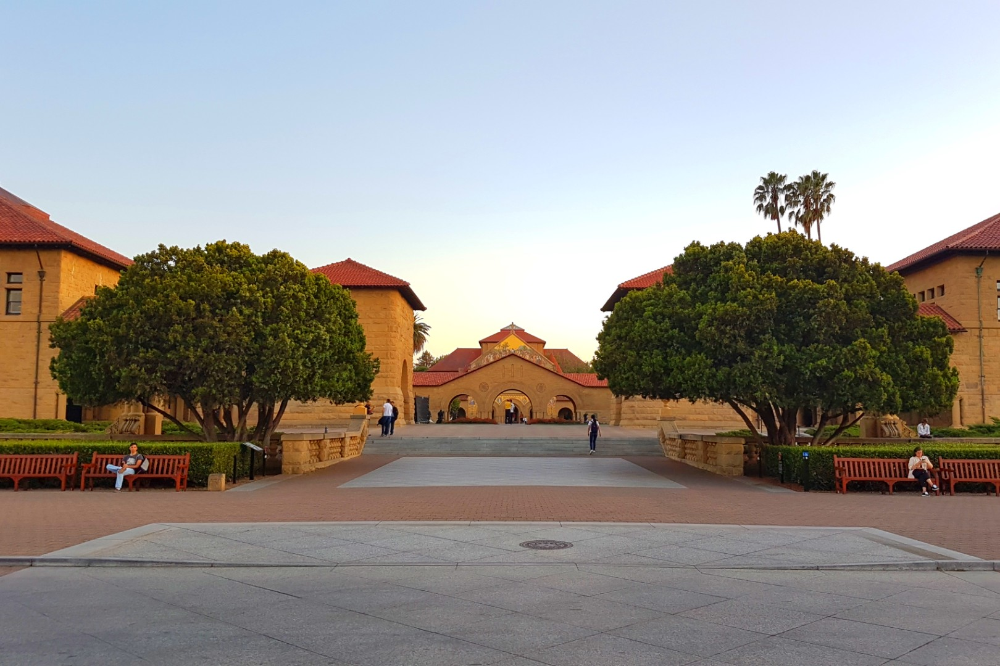

Personal
I’ve lived on 5 continents (with countries being the US, Germany, Australia, Singapore and Kenya), worked in 12 countries, and speak (and/or am progressing in) 4 languages (English, German, Chinese and Swahili). I love life, and believe that the simple joys in life are the most meaningful. I love learning, and enjoy the diversity of experiences it brings. I love meeting new people and learning about new cultures, and believe in the dignity of every individual.

Professional
I worked at McKinsey & Company as a strategy consultant, and recently left to join
FarmWorks, an AgriTech startup in Kenya. Prior to this, I graduated from Stanford University in Management Science and Engineering, and the University of Melbourne in Mathematics and Physics. I was also a data scientist at Accenture, a legal startup strategist, and a derivatives trader. I’m fascinated by decision-making in large, complex operations, especially in dynamic contexts - and in particular, the intersection of strategy, Operations Research (“the science of decision-making”) and the Theory of Constraints - because of their potential as tools for improvement and societal impact.
Aspirations
I’m inspired to create positive societal impact at a systemic level, and in an operational or supply chain capacity. I aim to do so through making advances in operational disciplines, especially in supply chain, logistics, transportation and manufacturing, through research and knowledge development, and practical innovations. Currently, I see huge exciting potential in Africa’s agricultural development and aim to really move the needle here via my deep interest in operations.